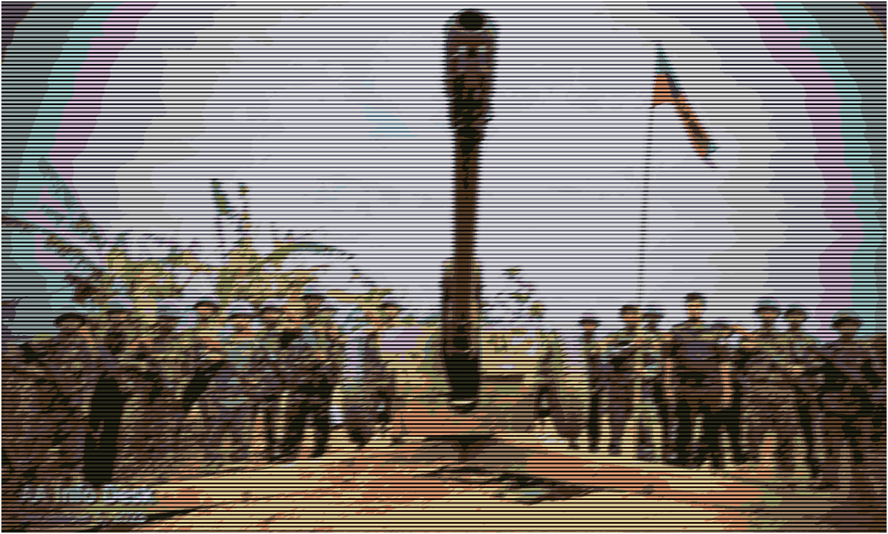
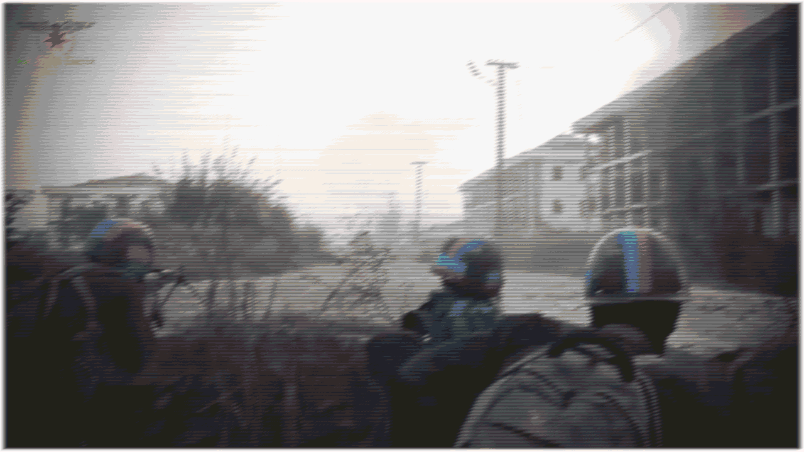

Arakan Army
The Arakan Army
Updated: 2/9/25
Overview
The Arakan Army (AA ) is an Arakanese ethnic armed organization located in Rakhine state. The group was established in 2009 during the Than Shwe Tatmadaw dictatorship , exiled in Kachin state. During the brief democratic period, the AA would involve itself with the KIA, before returning to Rakhine and launching an insurgent campaign. The AA would be one of many groups to break the ceasefire with the new Tatmadaw government and start offensive operations. In only a year, the AA would take large swathes of Rakhine state, encircling the capital of Sittwe and capturing the western regional command center. The relationship between the AA and the long persecuted Rohingya is complicated, with the AA often committing war crimes against the Rohingya and fighting their militant groups. The AA is listed as a terrorist group by the Tatmadaw regime .
Ideology & Tactics
The AA is one of the multiple EAOs fighting against the Tatmadaw in Myanmar. The AA believe in "Arakan Dream", an ideology based off of a self-governing Rakhine state which promises freedom, democracy, and dignity for all, including the Rohingya minority. This "way of Rakhita" seeks to restore the sovereignty of Rakhine state to the Arakanese people. However, debate has circulated whether or not this includes the historically marginalized Rohingya people, who have had villages and communities torched by AA members. Despite this belief in Rakhine nationalism, the AA support the ethnic Bamar PDF, who seek to implement a form of federalism and autonomy for minorities. In the territories conquered by the AA since late 2023, they have implemented a form of local government-representation for minorities unknown. In the past, AA forces mostly used guerilla warfare, including IED attacks, police base attacks, ambushes, and attacks on road infrastructure. Now that the Tatmadaw is on the backfoot, the AA are now using conventional and siege warfare tactics to capture and attack the remaining pockets of Junta bases & resistance in Rakhine. Internationally, the AA have not garnered enough aid to upset the worsening humanitarian crisis in Rakhine.
Notable Actions
• April 22, 2015 : The Arakan Army Tatmadaw in their positions in Kyauktaw, Rakhine state.
• January 4, 2019 : The Arakan Army
• March 9, 2019 : In another major attack, the Arakan Army
• November 26, 2022 : The AA Tatmadaw military Junta signed a new ceasefire following heavy fighting in Kayin and Rakhine that had broken the 2020 ceasefire. The group did not withdraw from fortifications held before the ceasefire.
• November 13, 2023 : Two weeks after the Three Brotherhood Alliance launched Operation 1027 in Shan state, the Arakan Army Tatmadaw and attacked and seized multiple outposts, camps, and bases. More than a dozen junta soldiers were killed and 6 AA The Arakan Army

Fig 1. AA FORCES POSING WITH CAPTURED EQUIPMENT FROM TARON EAIN BASE IN PALETWA c. JANUARY OF 2024
• November 14, 2023 : Arakan Army forces took over the town of Pauktaw, most notable for its proximity to the regional capital and regime base of Sittwe. In response, the Tatmadaw unleashed hell from above, reducing the town to rubble and leaving many civilians in ditches. On the same day, the AA
• January 15, 2024 : After only a week's worth of fighting, the Arakan Army India -Myanmar infrastructure project ran through there. The AA
• February 9, 2024 : Arakan Army forces, after heavy fighting and the sinking of three Junta transport craft, scored their most symbolic and strategic victory yet: the capture of Mrauk U. Mrauk U was the capital and the seat of power for the last Arakanese-led state in the region. Following the fall of Mrauk U, the AA Tatmadaw were killed, dying in minutes after AA soldiers struck their transport naval craft. The ruins of the old shall pave the way for the future.
• March 12, 2024 : The Ramree township, which is adjacent to a Chinese port project and economic zone in Kyaukphyu, fell to the Arakan Army AA
• May 17, 2024 : AA The AA The AA Junta airstrikes, despite a lack of evidence.
• July 18, 2024 : The Arakan Army Junta airstrikes bombed the town indiscriminately. Following the fall of Thandwe after weeks of fighting, the AA
• August 5, 2024 : The Arakan Army The AA Tatmadaw . Eyewitnesses interviewed by CNN say otherwise.

Fig 2. AA FORCES ASSAULTING BGP POST 5 IN MAUNGDAW, RAKHINE STATE c. DECEMBER OF 2024
• August 14, 2024 : The AA the AA Junta blew up an important bridge running on a river. Fighting has spilled over into nearby, mostly peaceful, Ayeyarwady state.
• December 9, 2024 : The AA Myanmar -Bangladesh Tatmadaw representing another obstacle for the AA Tatmadaw against the Arakan Army
• December 16, 2024 : The AA Tatmadaw holdouts in Rakhine state. They took a regional military commands center and captured multiple junta soldiers.
• December 20, 2024 : After nearly 3 months of fighting, the Arakan Army The AA Myanmar (the first being Lashio). The fall of Ann resulted in the crippling of Tatmadaw forces in the rest of Rakhine state and their relegation to a few enclaves on the coast, including the largest city in the state, Sittwe.
• February 10, 2025 : The Arakan Army the Tatmadaw trade fire near the Junta controlled regional capital of Sittwe. According to sources close to the Irrawaddy, the Rakhine militant group is attempting to find a weakpoint in the fortified defense. As of the first of July, the AA
• April 25, 2025 : The Three Brotherhood Alliance, including the Arakan Army the Junta separately declared unilateral ceasefires following the devastating earthquake, one that ended in the death of more than five thousand. Despite the detoriating humanitarian situation, both sides carried out attacks, with the Junta carrying out 409 strikes killing and injuring many civilians.
• June 9, 2025 : The Arakan Army the AA
• September 11, 2025 : In the leadup to the sham elections in late 2025, the Tatmadaw launched major counteroffensives in multiple theatres across the country, including in Rakhine state, where they perhaps sought to reestablish a link with Kyaukphyu and Sittwe. However, unlike in Shan state, where a divided and mostly satisfied EAOs were pushed back somewhat, or Karenni state, the conscripts of the Tatmadaw were stopped completely by the AA
• January 12, 2026 : The AA Tatmadaw stronghold in Rakhine state. However, during the two months of clashes, the AA Tatmadaw has been arming this pocket to the teeth for the past two years, meaning that even any successful offensive would likely be incredibly costly for the AA Tatmadaw protected Chinese port in the province's middle.
Sources
• https://www.stimson.org/2023/understanding-the-arakan-army/
• https://www.csis.org/analysis/arakan-army-posed-liberate-myanmars-rakhine-state
• https://www.usip.org/sites/default/files/2021-02/sr_486-the_arakan_army_in_myanmar_deadly_conflict_rises_in_rakhine_state.pdf